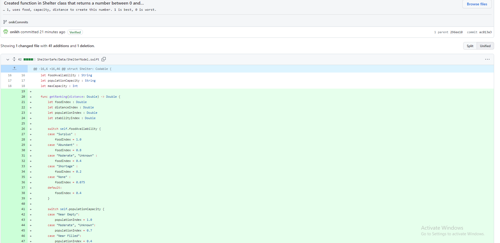
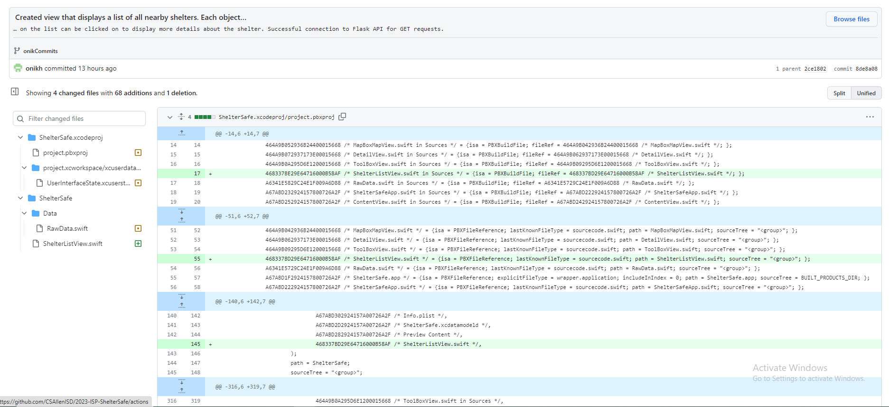
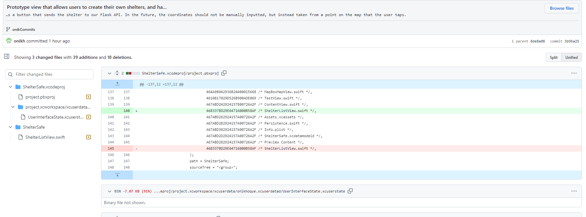

SHELTERSAFE
| Summary | Proposal | ▸Journal |
5-MAY-2023
Plans for the Week
At this point, we're essentially done with all the major features of the project. What's left to do now is connect the components that we've made: we have about ten different screens, but they're only visible through our Xcode previews and there's no real way to actually view them in the app. We need to combine everything, which really shouldn't be too hard. This week I don't really plan to get too much done aside from the weekend: I have two AP tests, and until they're over I want to maintain an exclusive focus on them.
What Did I Get Done?
Contrary to what I said, I did end up doing work, but the changes were made were very minute changes that just increased the quality of life of some screens. I fixed a fatal error in the screen to create shelters that happened when one field was empty and thus nil was formatted into JSON and attempted to be retreived when attempting to show the shelter on the map. I also helped some group members resize icons that we used but were never able to implement.

Besides fixing the aforementioned error, I also made some general changes to the CreateShelterView. I changed text entries to pickers that come with preset options, to make the process less confusing. I also added an laert that notifies the user if they've left any fields blank, and prompts them to fill in what's missing to continue. There is also an alert that appears upon success.
this will be updated as the weekend continues with finalizations
24-APR-2023
Plans for the Week
24-APR-2023
Plans for the Week
This week I wanted to target the one thing that we haven't even started on: the algorithm to rank the shelters, the original selling point of our product. Other than that, I wanted to fix some lasting inconsistencies with our API (yes, it's still giving me trouble after this long...) and try to make the Add/Edit shelter screen use the map to add coordinates, rather than manual input of coordinates.
What Did I Get Done?
The algorithm and issues with the API were addressed. I put the algorithm inside the Shelter class, so an instance of a Shelter can invoke the function using it's own properties as what dtermine the ouput, making it very easy to rank. It's essentially a weighted algorithm using rational functions to return indexes for the data. The API doesn't randomly crash when POST requests are sent now, I don't know what originally caused the issue but in my addShelters function I took some lines that did multiple things at once and spread them out over multiple lines; this simplification seemed to help the issue. I wasn't able to meet my goal of using the map to add shelters, bbut I think it is best for me to have given that to someone who's already worked a lot with the actual map (not me!) who knows what they're doing. Two successes, one failure.

At times, POST requests didn't function as I wanted. I thought I fixed this last week, but I guess I didn't. To try and fix it once and for all, I took apart the function and rewrote it line by line, rather than combining multiple actions into one line. I don't know what I changed and where, but it's SO much more consistent now.
This one is a big step. Previously, we had done no work on our algorith, but I have essentially finished it now. The only thing that's left in it is a function that will take two points on the globe and return the distance between them, but that's a very straightforward formula that I don't think I'll have any problems with.
17-APR-2023
Plans for the Week
This week there are two things that I want to get done. One, I want to troubleshoot the Flask API and make sure everything works fine, and two I want to make good progress in the creation of the page that will let admins create their own shelters, specifically to have at least the function to be able to create and send a shelter, without looking super fancy or anything (that's for later)
What Did I Get Done?
After testing out the API, I've concluded that there are some issues with PATCH functionality. This is not an error with my app, but the API I made for it. Secondly, I made a page for users to create their own shelter. As of now it's very barebones (for example, rather than choosing a point on the map, users have to manually input the coordinates) but it gets the job done and done well. I am happy with what I've done this week, and am exciteed to see how this project continues to move. I also assisted another group members in her endeavors enchancing the UI.
SA 1: Troubleshooting Flask API
To test whether my API was working, I made a separate view to test it. I made a button that'd send POST or PATCH requests, and tried to send a GET request and see if all the data showed up. Everything worked except for PATCH requests, which I will need to further troubleshoot. The actual content of the commit is from when I had finished testing it, and thus contains a GET request.
SA 2: Shelter Creation Screen
This is a step towards the end of the ISP. This is the screen that will eventually allow admins to create shelters. There are multiple forms that take user values for different proprties of the shelter, and after these are filled out a button sends said data to the Flask API running on codermerlin. While there is still work to be done on this, I believe that this satisfies the goal I set at the beginning of this week.
Interpersonal Challenge
This week, one of our teammates grew frustrated with the fact that he had done some more work than others, and sent an email to all of them about their lack of completed work. I don't disagree with this notion, but upon his showing it to me I thought it was unnecessarily harsh. I talked to him and I believe I was able to get across my message, and that being angry won't solve any problems. I think being mellow is the best thing a person can have.
10-APR-2023
Interpersonal Challenge
No interpersonal challenges occured this week. After what was a relatively intense internal turmoil between some members, I am glad to ble able to return to peace. In the past I have had my shortcomings accomodating my group as best as I could, and now I want to eliminate any weakness I have in my communication.
Technical Challenge
This week, I was able to figure out how to get our API to work with all servers. First, I had to learn how ports worked. By default, Flask programs run on port 500, which was not open on codermerlin servers. Next, I tried using port 80 which is usually open on servers and provide website data. This didn't work, so I did some investigation. Navigating to http://3.16.3.0:80 led to the codermerlin website, so I concluded that the port was already in use by Nginx or Apache or something of the sort. I then asked my teacher if there were any open ports I could use for myself, and directed me to the ports used for IGIS, which allows programs that run on codermerlin servers to have visuals displayed in a browser. Switching my Flask app to use this code, I was successfully able to get it up and running!
Scheduling Challenge
I had a field trip this week as well, over a 3 day span. Usually I work over the weekend, so this meant I didn't have nearly as much time. Additionally, I had to edit my video for CS Club elections, so I was very busy this wee. Thankgully, this project is in its final push that all group members are working towards making happen.
Significant Achievements
Flask API now accessible by any IP Address, and supports POST and PATCH requests:
Flask API GitHub issue and the actual API code
Static functions written in app to accomodate for POST and PATCH requests, in the RawData class: https://github.com/CSAllenISD/2023-ISP-ShelterSafe/commit/2ce18020bb37df93a61d25534bb04662004b05a2
03-APR-2023
Interpersonal Challenge
Maybe a sense of urgency has caused the change, but I feel like more people are willing to listen to me now. I still am not really taken 100% seriously, but hopefully this is a trend that continues and I don't have to keep picking up the slack for people.
Technical Challenge
After having to deal with the terrible documentation for MapBox for forever, we decided to switch completely to MapKit, Apple s map API. I wanted to persevere with MapBox because it'd make it easier to eventually make an Android version of our app, we simply don't have the time. This was by no means difficult, and actually took a lot less time than expected. I assigned the task to two group members, and working together they got it done incredibly fast. In only two days, the swap was complete. I tried working on the API that our app would be using with the Flask framework with Python, but it only worked locally: when I ran it on codermerlin servers and tried to curl it, it only worked from someone else's SSH into codermerlin servers.
Scheduling Challenge
Scheduling was not affected much, we are moving at a great pace. What might thwart us in the future however is a bug with Firebase, the password authentication system that we are using. It randomly causes crashes and we do not know how long it will take to fix the issue.
Significant Achievements
Created our own Flask API, which will run on codermerlin servers (3.16.3.0). As of now, only compatible with GET requests, and not available to outside connections:
Github Issue and the actual API code
27-MAR-2023
Interpersonal Challenge:
I assigned some tasks to our group, which I didn't think were particularly hard, but only about half my group said anything in response about starting. Past a certain point, I don't really know how I can motiveate what seems like an uninterested group, and I think the fact that I'm taking the project seriously has led to some people thinking that I'll be forced to pick up any work that they fail to do. which is true, I suppose. It's frustrating, but I don't really know what I can do. My voice really only has as much power as the power other people give it.
Technical Challenge
I finally faced my fears and took another look at the National Weather Service API. After failing to figure it out, I sort of hot-potatoed it around the group hoping someone would be able to figure it out, but nobody seemed able to crack the puzzle. I started at it for forever, and with a chrome extension that formatted JSON files to better display indents with lines and more I was able to figure it out. The whole thing is one giant object, with alerts inside an array which is a property of said object. After taking some time just starting at it, I was able to implement it and finally replace the placeholder API I had in place to learn how to request data from APIs.
Scheduling Challenge
There was some work that wasn't done by others, but our schedule didn't take a massive hit. I made up for lost time. I doubt I can keep doing this; as of late I've been kinda burned out. I'll find a solution some way or another.
Significant Achievements
Successful connection to National Weather Service API:
https://github.com/CSAllenISD/2023-ISP-ShelterSafe/commit/55a85bde120fa1060925ab98cc595774cc6f7858
All shelters from our JSON file now show up on the map.
https://github.com/CSAllenISD/2023-ISP-ShelterSafe/commit/68e236d6f7819cdafb22ff0091b1a0d56bb33718
20-MAR-2023
Interpersonal Challenge:
I don't really feel like a decent portion of the group takes our project seriously. I think it's always been like that, but it's kinda hard for me to see people in a negative light, so I think I just told myself it wasn't the case. As of late it's started to affect the project's path more and more, and I don't want this to end up being a bust. I can't help but think that maybe it's me that's the problem, but I'll try and be more firm with what I ask others to do.
Technical Challenge:
During a trip out of state, I tried working on a friend's Mac, and that along with having multiple Mac VM snapshots, the school Mac, and expiring Xcode tokens made pushing code a pain. After a while, I decided that this was a next week problem, so a lot of code I developed this week will likely end up being pushed next week.
Scheduling Challenge:
For Monday and Tuesday of this trip, I was gone for a trip to Washington DC. I had accounted for this, so it wasn't a big deal. What was a big deal, however, was when I accidentally locked myself out of my hotel room with my jacket inside, and went outside with my friends during the evening. I came back with a headache, runny nose, and a sore throat, so the rest of the week was gone as well. I usually work on the school Macs because my VM can't process graphics well, so I had to work on something different than what I had planned. In the end, it wasn't much of a loss: I made up for lost time.
Significant Achievements
Function written to parse our JSON data of our own shelters, model file to process JSON data, dedicated view to show list of shelters:
https://github.com/CSAllenISD/2023-ISP-ShelterSafe/commit/55a85bde120fa1060,
JSON file and multiple dummy objects created for shelters, will include more properties in the feature as we figure out how to flesh out PointAnnotations on the map: https://www.codermerlin.academy/users/onik-hoque/Digital%20Portfolio/CS-II/Projects/ISP/features.json
13-MAR-2023
Interpersonal Challenge:
No new developments or drama or anything... I'll keep this updated if anything happens. We need to talk more, this section would definitely be a lot more interesting if we did. I'll try to encourage people to discuss the project, what they're working on, and the current state of it.
Technical Challenge:
Much of my technical struggle this week came from the restructuring of our file/data heirarchy. I made a file completely dedicated to the data that our views will use, which was smooth until I wanted to add the geo coordinates of the user's devices. This was fine until I needed that data to access the relevant alerts for the area: by appending the coordinates to the link of the NWS's API, you can filter alerts by area. Making the LocationManager, which didn't have values at first, used in another object (the string in the link) was impossible without initializing. I got around this by making the LocationManager an environmental variable, and every file has access to it without checking if any values related to the LocationManager are invalid.
Scheduling Challenges:
Taking time to fix the mistakes that we made during prior development is something I accounted for, but not at this scale. I spent a while longer than I thought I'd need to when the project began maintaining an easy to understand structure between the data and the UI that displays said data. Because of this restructuring, I think development will be more efficient due to the lessened complexity, so it was most definitely a worty investment of our time.
Significant Acheivements
Restructuring of data to its own file, complete rehaul of file heirarchy. Very much easier to look at now:
https://github.com/CSAllenISD/2023-ISP-ShelterSafe/commit/0cc96f38262634e
Continued movement of resources to data file, creation of LocationManager for entire app unrelated to map:
https://github.com/CSAllenISD/2023-ISP-ShelterSafe/commit/3cb8c98fcc987f2bff669
6-MAR-2023
Interpersonal Challenge:
Sometimes, when sombody in the group doesn't know how to do something, they'll come and ask me for help. I like helping my team and appreciate them trying to understand the task at thand, but a lopt of things I'm asked are questions that are the first hit from a simple Google search. It's started to annoy me a little, but I feel like I'd be a jerk for telling people to "Google it instead" so for now I'll just keep going on my patience.
Technical Challenge:
This week was basically just learning. I spent a good amount of time learning about how SwiftUI data is traditionally placed and what strategies to handle placement of objects, data, and functions are the most effective. One challenge was that no video tutorial used an example akin to my situation, so I had to sift through videos looking for pieces and bits of information releveant to my project.
Scheduling Challenge:
This week was just a research/do nothing week, so we'll have to pick up the pace later to make up. To be honest, a little break every now and then does us all good, and I think that having a bit of time withou MapBox weather APIs and the likes constantly flooding our minds would make us more efficient upon our return post-research.
27-FEB-2023
Interpersonal Challenge:
There isn't realy much for me to say about interpersonal challenges. The closest thing that could count is our regular (mostly) friendly banter back and forth, and calling each other lazy.
Technical Challenge: Clear Your Head, Think Again
The current structure of our app doesn't follow the Model-View-Controller structure. SwiftUI is modeled around this structure, so it makes your life WAY easier to arrange stuff. My files are completely jumbled, and the organization is god awful. To fix this, I'm learning more about ViewControllers, Views, and other protocols in SwiftUI.
Scheduling Challenge: Unaccounted For
When I scheduled things, I forgot to account for the SAT and the half-day that we have on Friday. While these by themselves aren't necessarily a huge time deficit, it's the preparation for the SAT that really would threaten our workflow. Including the day of the two weekends and two weekdays before it, the SAT was all that was on the mind of our group members. I should have accounted for this when we scheduled everything, but at the least I did learn something. The dates for the US History STAAR are already determined, so it'd be wise for me to plan around that as well. AP Exams present a similar problem at a much bigger scale than the STAAR, but I realized that unless the date is changed then it'll be after our ISP is due.
20-FEB-2023: TECHNICAL DEBT
Interpersonal Challenge: MacOS Blues, Pt. 2
Everything's been crusing smoothly, but there's one thing I can't really solve as of now. Out of our group, two people don't have Apple Mac computers, meaning iOS development is impossible disregarding the computers at school. I was able to get around it by running a macOS virtual machine on my computer at home, but the other group member doesn't have a powerful enough computer to do this. They still can edit code via a terminal and a text editor, but they can't build and run the app. To ensure that they could help nonetheless, they've been making all the assets (icons, markers, etc.) and putting them into the files and commiting that. Most of these ahve now been completed, so I don't really know what to do at this point. I'm getting frustrated with the lack of options, and I'm trying to avoid them being furstrated with me.
Technical Challenge: Information Overload
As we move forward and begin on implementing data retrieval into our app, our biggest challenge has become using CoreLocation. There's already one instance of the LocationManager in one class that's responsible for accurately displaying the user's location on the map. This isn't the only use we need of CoreLocation however: we also need to feed that information into a separate file, this time to fetch relevant data from the National Weather Service's API. This is done by appending the coordinates to a link, and the corresponding JSON file will have information regarding disasters that only threaten the user's location, rather than all active alerts. This is easier said than done: usually, a ViewController is used to manage all the information sent to Views (ex. CLLocationManager object from CoreLocation library), but our system of organization is so badly coordinated that we might have to archive some of the structures in our files, remake the file heirarchy, and reinsert sections of code.
Scheduling Challenge: The Slow Rush
We only had three days of school this week, and because of a competition I had on Monday I only had Friday in class. To makeup for lost time, I've begun to start staying in my free period to try and work on our ISP, but after a recent push we've hit the biggest roadblock yet in terms of what we've done and are able to do. Our knowledge of SwiftUI simply isn't enough to take advantage of the documentation and understand tutorials, so to move forward I think we should insert a time period where we learn what we are doing more comprehensively into our schedule. I'm starting to grow frustrated by my lack of knowledge, and I've noticed that my team members share this trait.
13-FEB-2023
Interpersonal Challenge: All Over the Rainbow
Again, there wasn't anything very eventful. The first thing taht comes to mind is the discussion we had of our color scheme. There's a pretty even split between people who wannt blue and white, and those who want earth tones. While I'm in the earth tones camp, I do see why people would like the blue and white. The reason why I'm more against blue and white is because of the art style of our logos. One of our members is a very talented artist, and she's made the logo and multiple icons for use in our app. They look great, and I wouldn't want to trade them out for anything. They don't really fit with the sharp blue and white, and I don't think a lot of people get that.
Technical Challenge: SwiftUI, UIKit, & MapBox
An issue with the MapBox API is that often it requires elements of UIKit to properly function. For example, to add an icon Image, you can't use the SwiftUI Image class. You're forced to use the UIKit UIImage class, and I don't like that it forces the use of one framework over the other. Especially when Apple themselves is slowly pushing UIKit to deprecation, it's irritating that I still have to import the library to access basic functions like adding markers and icons to my map. There aren't really any alternaticves, so our group will have to learn the ins and outs of SwiftUI while also learining some elements of UIKit.
Scheduling Challenge: Good Work!
Today was a great week: we got a ton of work ahead and went WAYYY faster than our schedule needed us to. We completely finished setting the camera to the user location, placing markers down on the map, researching, and a ton of other small stuff that I thought would take longer. This is kind of a first for us, and I didn't anticipate a learning curve when I made the Gantt Chart. I didn't consider that as we learnt more about the tools we were using, the faster we would learn what was left to learn about said tools, so we're cruising along at a speed I'm really, really happy about.
6-FEB-2023
Interpersonal Challenge: Competition
As of right now, two of our group members have made logos for our product that will likely be the image for our app's icon on the home screen. Both of them are amazing, and to settle who's will be used, I think I'll run a vote to see which one our group thinks is a better fit. In general, I think introducing more votes is something that our group could benefit from. Other than this, which isn't really an interpersonal challenge, our group is doing well and we all have a mutual respect for each other. I feel like as we get into a rhythm, these problems are becoming less and less frequent.
Technical Challenge: Same Old, Same Old
This week's technical challenge is the same as last week's: the view of the map still doesn't default to the user's current location. We tried taking care of other stuff, like making it look prettier and trying to get a logo, on top of debugging small issues, but those things don't really contribute as much to our MVP. One of our gropup members very recently found a discord server made by the developers of MapBox devoted to supporting and helping developers, so asking there would give us the help we need at this moment.
Scheduling Challenge: Divided We Stand
We've made a skeleton of the app by this point, and now we need to divide up the tasks for the core features among our group. We still need to make markers, get polygon data from the NWS to show up on our map, and other assorted things. I don't know who will do what best, and I don't know who can learn fastest. I'm placing my trust in the group to choose their own task, but in the future this might backfire and affect out schedule. I want to monitor tasks closely as people start on them, and swap people around if I feel that they won't work out well with our time constraints. The earlier I swap in these situations, the less possible damage is done to our schedule.
28-JAN-2023
Interpersonal Challenge: Resolved
Last week I detailed how I felt that the fact that our class was split into different periods created a gap between us that made it hard to work. I realized that rather than notifying erveyone of what we're working on during my class or after school, doing it during the CS period I'm not in makes it much more visible to them. On top of this, one of our group members in that period has started encouraging the others to work as well, and a combination of those two things has fixed the problem.
Technical Challenge: The Serengeti
Our app has made good progress. We finished configuring the user location, but there's a slight problem with it: When the app launches, the map is centered over the Serengeti in central Africa, the default location on startup. We were able to change these coordinates to a specific locatino, but getting it to default to the user's location is a struggle we're currently working on. The MapBox iOS SDK documentation is really meager, and it's hard to work with.
Scheduling Challenge: Winter Freeze
Our schedule took a hit with the recent winter freeze that just occured. With four days off of school, we lost a decent chunk of collaborative time. It's not a huge loss though: over the break, me and some of our teammates worked on it together and made up for the deficit from the bad weather days; we might even have a lead on our schedule now. This doesn't mean we can relax though: we have zero idea how difficult this project will be as time moves on and we tackle different parts of it, so we need any time ahead we can get.
21-JAN-2023: PICKING UP THE PACE
Interpersonal Challenge: Nobody's Listening...
One disadvantage of having a 10 man team like ours is that everyone assumes that when someone slacks off, there'll be people to fill the gap in the workflow they create. That holds true for one or two people, but when a large portion of your group thinks that... it's a problem. When I asked our group to configure the .netrc file, I expected that people would do it within 2-3 days, but it didn't end up happening. You can blame this on them, but I think that a great portion of it is my fault as the project manager. I have to keep people working, and make sure people carry their weight. I feel like if we all had the same class period, it wouldn't be as big an issue, but our split makes it difficult. I configured things for people in my period, but much of the other period our group is split between hasn't done it yet. Among them, I taught two of them how to do it after school, and I think the best solution is for them to teach the others in their period how to create their file and successfully connect to the API.
Technical Challenge: TabBar, Solved
My technical challenge from week 1 has resolved it self in a ...unusual way. The issue was that when the MapBoxMapView was open in the TabView of our app, the tabs would stop being responded and the user was essentially softlocked to the map. MapBoxMapView itself, using the MapBox API, runs with many issues on my macOS VM. Graphics are very limited and the Metal graphics rendering API does not exist on the VM. This causes errors with the map that I didn't expect, but I didn't have a reason to think that this was related to tehe functioning of the TabView. Knowing that I'd be able to do limited work with the map because of this issue, I relegated it to other group members and split my focus between parsing data from the National Weather Service's API and the general user interface outside of the map. Apparently, the TabView works just fine for everyone else, and the absence of a functioning Metal graphics engine on my VM somehow causes something in the MapBoxMapView to not work with the TabView. While I don't really understand the problem, and why Metal doesn't function on my VM, I'm glad that this problem only exists because of my setup, and is not the fault of our code.
Scheduling Challenge: Shifting Lanes
This isn't a really big issue as of right now, but some people are outpacing others in terms of their progress towards their tasks. This is fixed easily with just some rebalancing of teams and scheduled times: we move around people on different tasks, change the time given for the task, etc. The thing about this problem is that it requires constant attention (even it is minimal attention): if we let things get more and more out of sync, we'll find ourselves completely off balance.
16-JAN-2023: CONFIGURATION
Interpersonal Challenge: Splitting Tasks
Nothing big really happened, but me and a teammate did have a tiny bit of tension over both wanting to do one task. Both of us are somewhat familiar with JSON data, we each could build a model to parse it and then display it in the UI better than the other. After contemplating it for a little, I came to the conclusion that it'd be wisest to let him take the task he wanted and work on something else. I made some minor cosmetic changes, and he worked with the JSON data. I realized that in the end that we could look at each other's work after we finished and add our own optimizations to it, so divvying up tasks doesn't mean that you won't get a say in what others make.
Technical Challenge: .netrc
In order for us to begin using the MapBox API, the home directory of the device needs to contain a file called .netrc that contains the API key. Getting said API key to everyone else and getting them to correctly input it into their netrc file (which itself needs to be configured correctly would be a hassle. To remedy this, I placed it into the README file of our GitHub repository. I needed to put it somewhere where it wouldn't affect the code and was easily visible to people with access to the repository, so this emerged as the perfect place to put it temporarily. I placed the instructions to configure .netrc and the API key there near the end of the week, so many in our group still haven't done it. The instructions are clear, however, and I feel that we'll all ahve it configured soon.
Scheduling Challenge: Less Than Expected
I expected to haev time on Thursday/Friday to configure the API key and .netrc, but that class had a lecture on SQL. Although we were unable to use this time to get the school Macs up to speed with our app, I wanted to make sure we didn't lose time. I decided that to make the best of this time, we should instead configure our personal devices to work with this. I told our team members to configure the netrc on their personal devices, and although I think this is less important than the configuration of the school computers it is important that we use every ounce of our time to it's maximum potential regardless of obstacles we come across. If an event becomes impossible in a certain time frame, the best thing you can do is find another task to fill it so no time is wasted doing nothing.
9-JAN-2023: SETTING THINGS UP
Interpersonal Challenge: Who's Who?
With just a week of development, I can tell our group has great chemistry. A lot of us were friends to begin with, and a lot of the people I didn't know at the beginning of this year I can safely call a friend. This doesn't make us exempt from conflict, however: there are some roles that all of us want, and some that nobody really wants to do. One thing that I didn't expect was that a lot of people in our group would turn to me to resolve these conflicts. I don't like putting my foot down and making a decision to resolve conflict without at least allowing a bit of time to see if a compromise will be arrived at, so I decided to wait a day. We were able to make our own decisions and compromises that satisfied us, and we're settled in roles that I'm confident we'll be able to make the most of.
Technical Challenge: Xcode Views
As a group, we're relatievly new to Xcode, so we don't understand a lot of the quirks of SwiftUI. While working on the GUI, we came across one of these, and we didn't really have a way to fix it. At the bottom of our GUI is a TabView that allows us to switch between views (screens) with relative ease. However, the TabView doesn't function when the view for the map aspect of our app is active. It works for every other view it works perfectly however, so it's narrowed down to a problem between the interaction between MapBoxMapView and TabView. My theory is that the issue originates with Z-Axis position of the elemnts, and there likely is an element of MapBoxMapView (which was created with many features of the MapBox API rather than base SwiftUI) that overlaps the TabView. I've faced similar problems programming my Digital Portfolio, and I think our team's best approach would be to give every element in eah view a separate background color rather than transparency. This would make every element's position in the Z-Axis clear, and from there we'd be able to sort it out and make sure everything is in its proper position.
Scheduling Challenge: Long Time (Intro)
If there's anything I can say with confidence about the course of our development cycle, it's that there will be A LOT of things for us to learn. Each of us learn at a different pace however, so it's difficult to give an estimate for how long it'll take X person to do X task. For example, I feel that I take more time to learn and understand concepts than most people, but I have a very high skill cap and can push the tools I have to their utmost limit. Others may be the opposite, and some in between. I tasked myself and a group member with making a model to parse JSON data fetched from an API, but the little documentation of the API makes it very difficult for us to understand. I didn't think it'd be hard at first, as the example JSON fils had very little complexity, but this API (ran by the national weather service) uses things like JSON context and optional values, something we have no idea how to account for. Needless to say... we didn't finish. However, we made progress, and that's what matters. In the future, we might want to extend deadlines for items we aren't familiar with to something that gives us room to comfortably learn the topic.
2-JAN-2023: A CLEAN SLATE
Technical Challenge: MacOS Blues
Week 1, contrary to my expectations, presented a much heftier challange than expected. We decided that it'd be best (with every group member having Swift experience) to develop ShelterSafe for iOS through Xcode. It's great idea and all but.... I don't have a Mac. I had multiple options: use a virtual Mac, rent a physical one out, buy one, or try and set up a virtual machine. I don't really have much money to spare, so I first tried to set up a virtual machine. Problem number one was that my PC has an AMD CPU, completely incompatible with MacOS. I tried using VMWare at first, but after multiple failed attempts I decided to ditch it and try VirtualBox. This wasn't the problem however: I needed to set my CPU profile in the virtual box settings to an Intel CPU, and this allowed me to boot into the installation stage. After tampering with more settings, I was able to get into the actual GUI. I couldn't download Xcode, however, so I was forced to update. This was a terrible decision: the VM completely broke. I had to restart the process, but this time I looked at the minimum version of macOS that I needed to run the latest version of Xcode and made sure to install that... it finally worked!
Roles: Where Do I Best Fit?
Every project has a multitude of roles, and it is crucial that we first decide who does what. Each of us has our own unique strengths and weaknesses, and with deliberate consideration to group roles we can ensure that our weaknesses are neutralized by each other's strengths. In this section, I'll give some insight as to what roles are available, what they do, and how well I think I'd fit in the role.
Software/Development Engineers are primarily responsible for writing code, and requires a complex understanding of fundamental components of computer science. On top of this however, it's important that they know the syntax and specifics for the langauge(s) that the project will be in. With the planned development environment being Xcode, using the Swift language and the SwiftUI framework. I don't think I'd be suited particularly well to this role because of my lack of knowledge in SwiftUI. My experience with Swift frameworks and libraries is limited to the IGIS library, which is more similar to the UIKit framework that we chose not to use due to its being slowly phased out. The best fit for this role would be someone that's well versed with Xcode and SwiftUI, but I feel that all of us have the potential to learn quick and be able to realize this role's potential within a fairly limited time. A problem that I would definitely see myself going through is not understanding SwiftUI's framework, but this is easily remedied with the huge amount of online tutorials, forums, the official Apple Developer Documentation, and other group members that may have knowledge where I lack and are willing to help and teach me.
QA (Quality Assurance) Engineers act as sort of a filter to catch bugs that the primary developers fail to notice. They collaborate with the Software/Development Engineers to understand these bugs and eliminate them before the product reaches the mass market. They're very much unsung heroes of the tech industry, and many fail to realize that without them much of our technology would be barely finctional, if it all. This role requires intimate knowledge of the language, libraries, and frameworks that one is using in order to quickly find the source of these errors and find ways around them. While I wouldn't be a perfect fit for this role, as my knowledge of SwiftUI is very shallow (at the moment!), I have a knack for getting around problems in creative ways that I feel would make me an appropriate choice for this role. Challenges I would face as this role is not understanding the code of the software engineers, but to remedy this it is very effective to keep communication open as possible between the two groups.
Project Managers are the glue that holds the rest of the team together. They're responsible for planning, assigning duties, setting deadlines, managing resources, and resolving conflict. They act as the torchbearer of a development team, providing strong leadership and a sense of direction and vision for the team. Project Managers still need technical knowledge, as a portion of their time will be spent giving suggestions and assisting others. The one essential thing, however, is that a project manager can efficiently tackle internal conflict within the dev team, and ensuring everyone stays happy and working at their best. I feel that I'd be a good project manager because of my sense of vision and ability to resolve conflict and compromise effectively. I don't think I'd much like being a project manager however. Rather than give people instructions, I've always been the kind that'd rather go and do it themselves. On top of that, I'd like to be intimately involved with the development, and although project amanagers are involved in this regard the other roles simply are involved more. As stated before, placating internal conflict would be a potentially dentrimental obstacle, and in order to face it it's important that I effectively come up with compromises or alternate plans to keep everyone happy.
Product Managers are the link between the product and the market: their task is to identify the need and ensure that all decisions made by the team please the consumer and that they stand out in today's vast market. Product Managers need to do a lot of research into the market, and have a good grasp on what sells and how to fill unique niches or innovate enough to fill saturated ones. In a way, they contribute the the final vision of the product in a similar way to the Project Manager, but their vision holds the consumer in high regard, in contrast to the Project Manager who looks at their product more in a vaccum. I don't think I'd make a good product manager. I'm not very well versed in markets and niches, and doing research into them seems tedious and not as interesting as other roles. One problem that is very likely for me to face as a product manager is finding ways to make our product stand out in a world so saturated with every type of technology imaginable. My approach to this is to think about fundamental problems or inconveniences, think of a simple solution, and slowly build off that rather than starting off considering technology, viability, resources and economics. Thinking in this way keeps your way of thinking fluid and flexible, and lets you build off an idea and consider many options rather than attempting to come up with a completed idea all at once. To stand out among competitors, a product manager must always be thinking of ways to better their product and appeal to a greater audience, as well as maintaining cognition of the capabilities of the development team and available technology.
Release Engineers are the glue to the team as project managers are, but in a digital manner rather than an interpersonal one. They're responsible for threading together each stage of the software from testing to packaging to deployment. They're also tasked with maintaining source code respositories. They must collaborate with others to fix build issues and decide the best way to execute each stage of the app from the first file created to the final release. I'd make a good release manager, as I like to think in a one-step-at-a-time manner and have good awareness of time, my and my peers' capabilities within said time, and I know my way with git repositories and GitHub. Challenges would be far from scarce: multiple people pushing to the same repository can often lead to a jumbled mess, and without carefull allocation of tasks to certain people and creating branches to ensure that people have a contained area to work without risking the integrity of the product whilst attempting to implement new features.